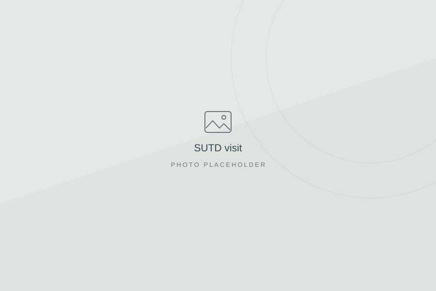
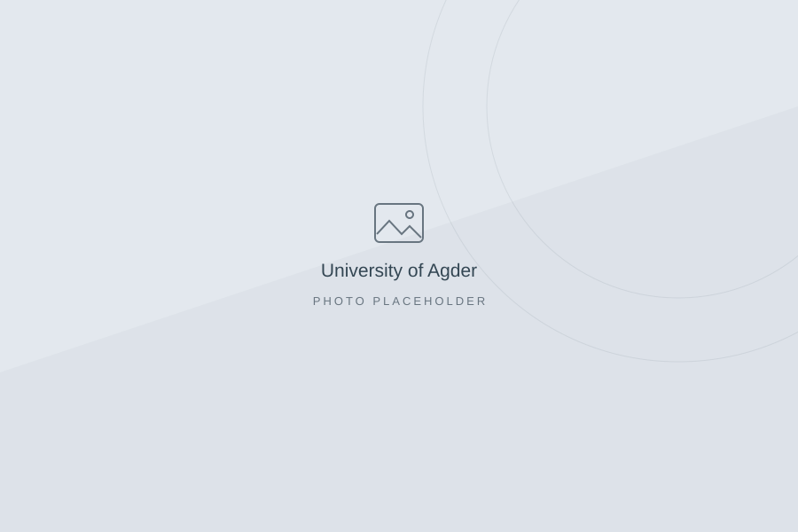
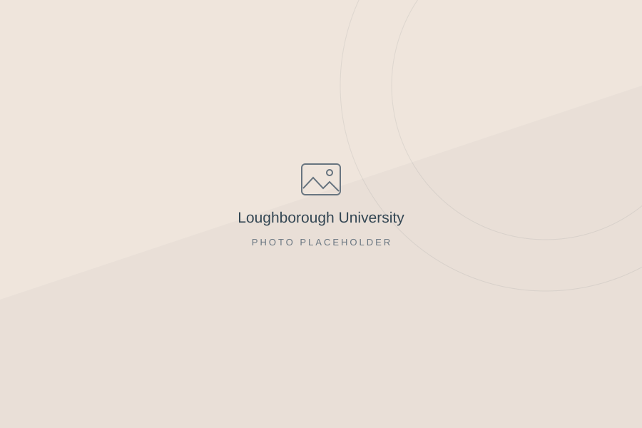
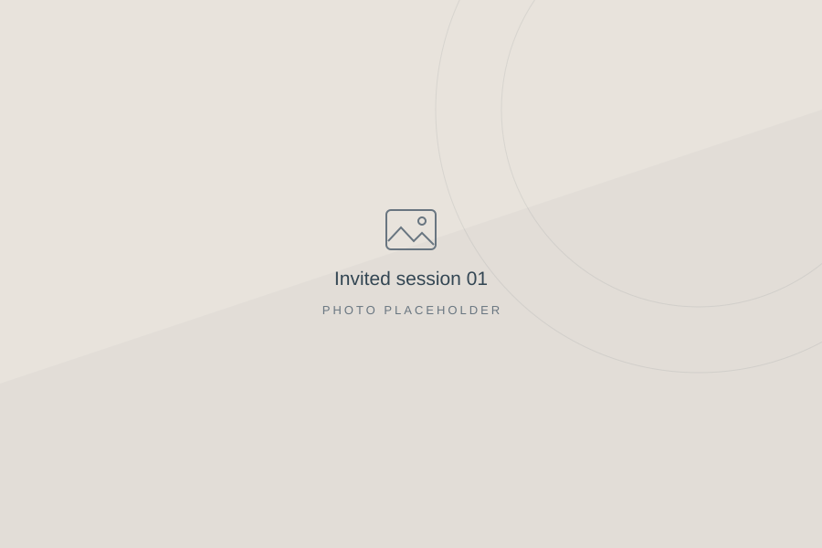
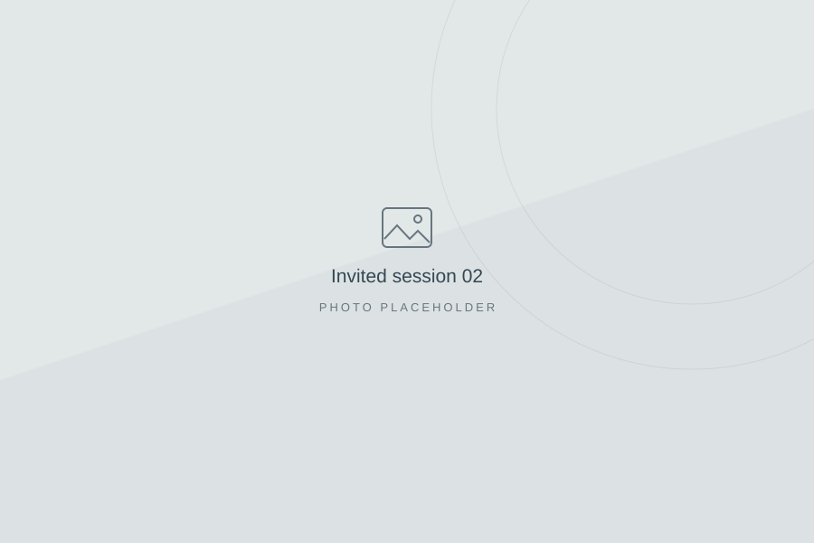

Academic visit
SUTD
Add the date and a brief description of your visit.
Hello, I’m Akarsh
Research Fellow at Nottingham Trent University, working on federated learning, edge intelligence, and healthcare AI.

A little about me
I am a Research Fellow at Nottingham Trent University, working on lung cancer detection using CPRD electronic health records through the HORIZON Europe Phase IV AI project, under the guidance of Prof. David Brown.
I completed my PhD in Computer Science at IIIT Kottayam in 2024, advised by Dr. Jayakrushna Sahoo. My doctoral research explored privacy-aware, efficient multi-tier federated learning for mobile IoT systems.
My research themes →Beyond the desk

Academic visit
Add the date and a brief description of your visit.

Research visit
WISENET Group · Autonomous cyber-physical systems.

Research visit
Visiting researcher · August 2025–January 2026.
Sharing ideas

Invited session
Add your session title, venue, date, and one sentence about the topic.

Invited session
Add your session title, venue, date, and one sentence about the topic.
Milestones
Selected for an MSCA postdoctoral fellowship in Slovenia.
Shortlisted for an MSCA postdoctoral fellowship in Ireland.
Replace with an award, fellowship, invited keynote, or another achievement.
Research Fellow
Nottingham Trent University, UK
Visiting Researcher
Loughborough University, UK
Adhoc Faculty
IIIT Kottayam, India
Visiting Researcher
University of Agder, Norway · WISENET Group
Doctoral Fellow
iHub–HCI Foundation, IIT Mandi, India
Earlier appointments and full education details are available in my CV.
I welcome conversations about federated learning, privacy-preserving AI, and healthcare applications.